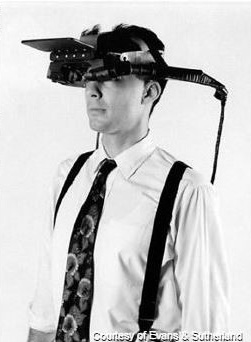

A Rough Idea
The exact origins of virtual reality are disputed, partly because of how difficult it has been to formulate a definition for the concept of an alternative existence. The development of perspective in Renaissance Europe created convincing depictions of spaces that did not exist, in what has been referred to as the "multiplying of artificial worlds". Other elements of virtual reality appeared as early as the 1860s. Antonin Artaud took the view that illusion was not distinct from reality, advocating that spectators at a play should suspend disbelief and regard the drama on stage as reality. The first references to the more modern concept of virtual reality came from science fiction.

A View Master, an older and patented version of Virtual Reality
Virtual Reality Throughout The Ages
20th Century
Morton Heilig wrote in the 1950s of an "Experience Theatre" that could encompass all the senses in an effective manner, thus drawing the viewer into the onscreen activity. He built a prototype of his vision dubbed the Sensorama in 1962, along with five short films to be displayed in it while engaging multiple senses (sight, sound, smell, and touch). Predating digital computing, the Sensorama was a mechanical device. Heilig also developed what he referred to as the "Telesphere Mask" (patented in 1960). The patent application described the device as "a telescopic television apparatus for individual use...The spectator is given a complete sensation of reality, i.e. moving three dimensional images which may be in colour, with 100% peripheral vision, binaural sound, scents and air breezes." In 1968, Ivan Sutherland, with the help of his students including Bob Sproull, created what was widely considered to be the first head-mounted display system for use in immersive simulation applications. It was primitive both in terms of user interface and visual realism, and the HMD to be worn by the user was so heavy that it had to be suspended from the ceiling. The graphics comprising the virtual environment were simple wire-frame model rooms. The formidable appearance of the device inspired its name, "The Sword of Damocles". 
An Image of Ivan Sutherland's Virtual Reality Headset
21stCentury
The 2000s were a period of relative public and investment indifference to commercially available VR technologies. In 2001, SAS Cube (SAS3) became the first PC-based cubic room, developed by Z-A Production (Maurice Benayoun, David Nahon), Barco, and Clarté. It was installed in Laval, France. The SAS library gave birth to Virtools VRPack.
2010 and Onwards
In 2010, Palmer Luckey designed the firstprototype of the Oculus Rift. This prototype, built on a shell of another virtual reality headset, was only capable of rotational tracking. However, it boasted a 90-degree field of vision that was previously unseen in the consumer market at the time. Distortion issues arising from the lens used to create the field of vision were corrected for by software written by John Carmack for a version of Doom 3. This initial design would later serve as a basis from which the later designs came. In 2012, the Rift is presented for the first time at the E3 video game trade show by Carmack. In 2014, Facebook purchased Oculus VR for what at the time was stated as $2 billion but later revealed that the more accurate figure was $3 billion. This purchase occurred after the first development kits ordered through Oculus' 2012 Kickstarter had shipped in 2013 but before the shipping of their second development kits in 2014. Between 2014 and 2016:
A look at the current and future PlayStation VR
From 2019 to 2020:
A look at the Oculus Rift S(now discontinued)